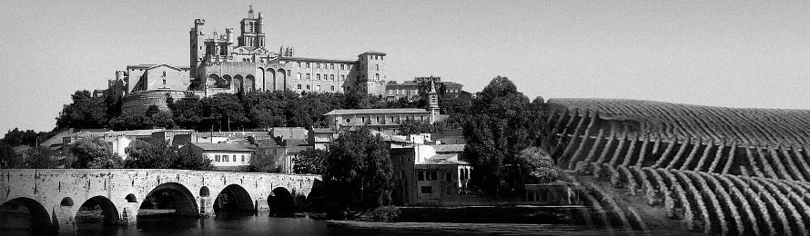

Sun, Grapes & Web-5
1st EDITION : April 2012 in Béziers(34) - France

Web-5 Conference the Venue
Béziers

Béziers is a very old city : 2700 years of history which starts with the installation of an exogenous population in the begining of the VIth century bf. J.C. on a very ancient acropolis (Paleolithic industries).
The town is located on a small bluff above the river Orb, about 10 km (6.2 mi) from the Mediterranean in the biggest vineyard of the world. At Béziers the Canal du Midi spans the river Orb as an aqueduct called the Pont-canal de l'Orb. claimed to be the first of its kind. Foothills of the Massif Central in the plain of Lower Languedoc, Beziers is located 10 km from the Mediterranean Sea and 50 km of moderately high mountains of the Haut-Languedoc, such as steep mountain Caroux (1090 m) , Espinouse (1124 m) and the mountains of Lacaune, in the Tarn (1267 m). Boasting a large communal area (9548 hectares), Béziers is the largest municipality in the department of Herault. Less than half of the municipal area is urbanized, the rest of the territory is composed of green spaces, protected natural areas and agricultural areas (about 2000 hectares), mainly planted with vines.
Béziers has a Mediterranean climate. Summers are very hot and dry and winters are mild or cool and wet. Béziers is under the influence of two principal winds: the north wind from the north-west wind is cold and dry and blowing as strong gusts and clears the sky, and the sea wind is sweet or hot and humid and brings a cloudy sky, rain or thunderstorms.
source : WikipediaThe I.U.T. of Béziers

The IUT of Béziers is a university of moderate size which combine three types of trainings complementary, blossoming, practical and promising job wise : Network Administration and Communications (RT), Multimédia (SRC), Business-Management (TC).
Zoom in